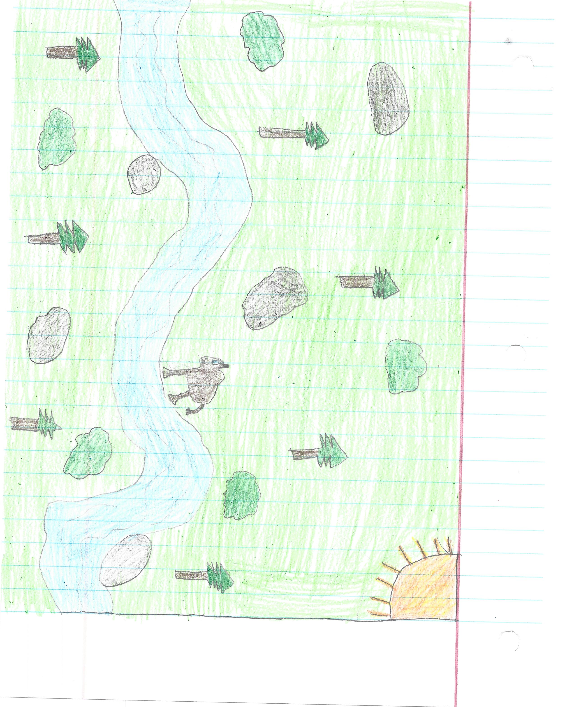

I under estimate the buffalo. He back up a few steps, and then he proceed to run me over. I start running as if there is no tommorow, and to my suprise, I stumble apon all of my friends! My friends grabbed their weapons and prepare to jump the buffalo and take it down. We prepare for an intense battle with this buffalo; he was very fiesty and provoked to the point where he is going to kill us no matter what.
We charged a striking blow like we danced against the sun to the buffalo, yet somehow he still stand as some heroine. We give a few nore blows till the buffalo just gave up. He collaspes and lays on the floor like it was a welcoming hug into his afterlife.
Afterwords, we celebrate by doing a dance I like to call the Hunting Dance! It's where we hold our weapons and pass them around in a circle chanting some of our happiness from it. I'm usually the best leading this dance since I chant the loudest and proudest. Then we carry our harvest meat to the tribe.
